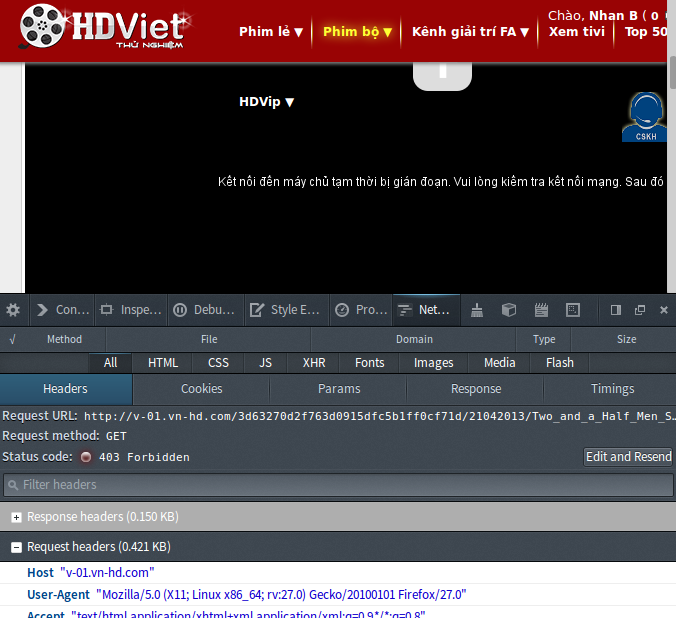
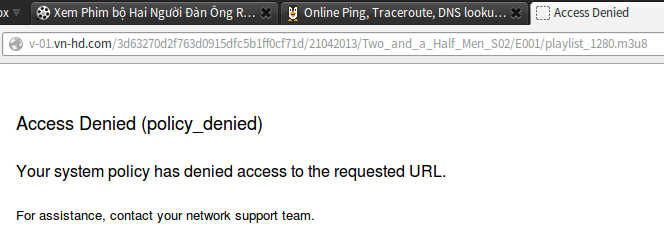
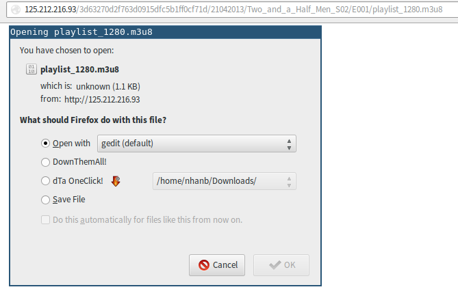
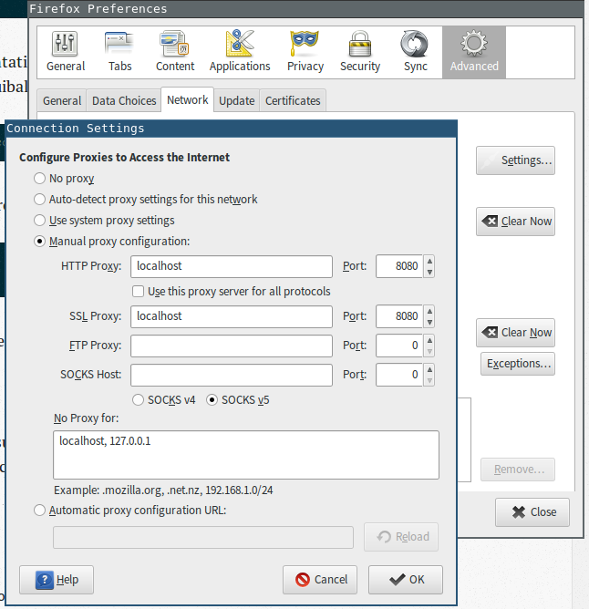
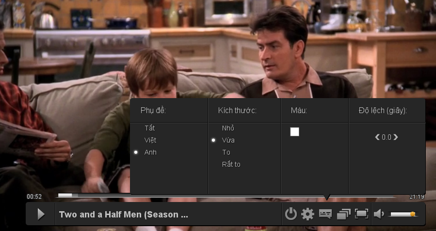
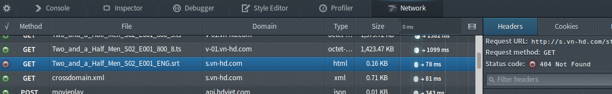
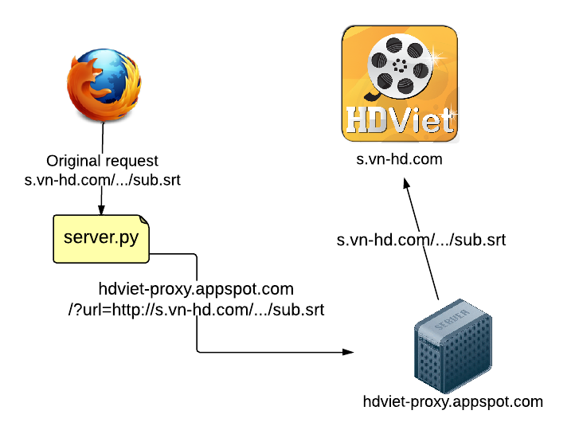
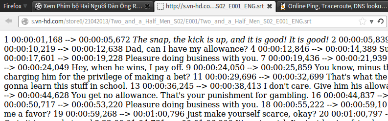

How I bypassed my university's domain blocker to watch movies on hdviet.com
TL;DR: Clone my script from GitHub, run it with python2 server.py 8080, configure your
browser to use localhost:8080 as HTTP and HTTPS proxy, profit.
Disclaimer: The sole reason I came up with this trick and documented it was to satisfy my curiosity. I don’t come to campus often anymore so it’s not like I’m going to spend 8 hours a day wasting the university’s internet bandwidth for “Two and a half men” anyway…
Another Note (last one, promise!): If you’re using Mac OS X or Windows, Proxifier will probably do the trick way better and without any hassle. If you’re using Linux or you simply want to learn more about this stuff, read on!
The problem
This semester the RMIT-WPA wifi network no longer requires manual proxy configuration (probably because it makes Web Programming students miserable - they have to use Google App Engine), which is good news. Nevertheless, that annoying domain filter is still up and running, meaning we still can’t go to certain blacklisted websites. (mediafire, fshare, gamevn, vnsharing, etc.)
Hdviet’s case is a bit special: the domain hdviet.com itself is not blocked, but the domain of
the actual server hosting its playlists & videos, v-01.vn-hd.com, is. A quick look at Firefox’s
excellent Network inspector confirmed that:

If you request the file directly:

Going for the IP
Naturally, I wanted to check if I could access the resource directly via the IP. An easy way to look up a domain’s IP is using ping.eu. Once you’ve got the IP, try replacing the domain with it in the failed request:

This time it works, which means only the domain is blocked, not the IP.
One thing worth noting about hdviet: The video is not served as 1 single file, it is instead
chopped into multiple parts, which are loaded in order. Therefore, our first job is to
automatically replace v-01.vn-hd.com with the IP in all of the requests.
Twisted proxy
Since changing the request destination directly in the browser is probably difficult (I don’t think Google Chrome even allows that), we’ll use an HTTP(S) proxy. This is when Twisted comes in handy.
Twisted is a battery-included framework to build robust network applications. By “battery-included” they mean that most of the common functionalities have already been implemented so we can use them out of the box. For the purpose of this tutorial, we are only interested in its HTTP proxy library.
To install twisted, use pip:
sudo pip install twisted
Since the default implementation doesn’t support HTTPS, we’ll use a powered-up one I found on GitHub, written by Peter Ruibal. Let’s clone this thing:
git clone https://github.com/fmoo/twisted-connect-proxy.git
Now let’s try running the proxy server: cd into the cloned directory and run it with python2:
cd twisted-connect-proxy
python2 server.py 8080
Then configure your browser to use localhost:8080 as the proxy. For Firefox it’s easy:

You should now be able to surf the web through the running proxy. But hey, you still can’t visit any blocked site! Of course you can’t, since we haven’t replaced the domains with IPs. Let’s do that.
Domain to IP
Open server.py, look for this part:
class ConnectProxyRequest(ProxyRequest):
"""HTTP ProxyRequest handler (factory) that supports CONNECT"""
connectedProtocol = None
def process(self):
if self.method == 'CONNECT':
self.processConnectRequest()
else:
ProxyRequest.process(self)
The process() method is in charge of forwarding whatever request the proxy receives to the actual
target server. Let’s intercept it with our own redirect() function:
redirects = {
'v-01.vn-hd.com': '125.212.216.93', # video
's.vn-hd.com': '210.211.120.146', # sub
}
def redirect(req):
for domain, ip in redirects.items():
if req.path.find(domain) != -1: # check if we're requesting a blocked domain
req.uri = req.uri.replace(domain, ip, 1)
req.path = req.path.replace(domain, ip, 1)
req.requestHeaders.setRawHeaders('host', [ip]) # replace "Host" header too
return
class ConnectProxyRequest(ProxyRequest):
"""HTTP ProxyRequest handler (factory) that supports CONNECT"""
connectedProtocol = None
def process(self):
redirect(self) # intercept request processing
if self.method == 'CONNECT':
self.processConnectRequest()
# the rest of the file ...
In the snippet above, we defined a dictionary redirects that stores the blocked domains that we
need to replace. Note that I added s.vn-hd.com as well, which is the host that stores
subtitles. In our actual redirect() function, we check if the request being processed is pointing
to any of the blocked domains defined earlier, then replace domain with its corresponding IP if
there is a match:
req.uri = req.uri.replace(domain, ip, 1)
req.path = req.path.replace(domain, ip, 1)
req.requestHeaders.setRawHeaders('host', [ip])
Note that the 3rd line also changes the “Host” HTTP header. Yes, our beloved people from IT Services do inspect HTTP headers to block stuff too. This line will introduce another problem that I will explain later in this post.
Now restart our proxy server and check the link again. It should work. You can now watch stuff, but you’ll notice that English subtitles are not shown even if you turn them on:

If you open the browser’s network inspector, reload the page and try to enable English subtitles again, you’ll see the problem:

The link in question is:
http://s.vn-hd.com/store6/21042013/Two_and_a_Half_Men_S02/E001/Two_and_a_Half_Men_S02_E001_ENG.srt
Since s.vn-hd.com is in our blocked domain dictionary (redirects), the proxy server will
request this:
http://210.211.120.146/store6/21042013/Two_and_a_Half_Men_S02/E001/Two_and_a_Half_Men_S02_E001_ENG.srt
If you try to open it directly in a browser (that isn’t using our proxy server), you’ll get a 404
too. Why is that? This is because the Host header is also changed to
210.211.120.146
instead of the original domain s.vn-hd.com. Normally a single web server can be serving
multiple domains at a time, and when we send an HTTP request, we need to specify Host: <domain>
for the server to know which domain we want to get the resource from. When the
Host header is
simply the IP, the server may get confused and therefore cannot serve the correct resource. As for
v-01.vn-hd.com, we got lucky in that case.
On the other hand, if we keep Host: s.vn-hd.com as-is, RMIT will be able to block our request.
This leads to our final trick:
Google App Engine to the rescue!
Because a subtitle file is just plain text, its size is negligible. We can set up an external
website that receives our original request, fetches the requested file on hdviet’s server and
returns the requested file’s content back to us. I have already set up a proof-of-concept Google
App Engine website at hdviet-proxy.appspot.com. It works like this:

Now we need to edit our server code to redirect any s.vn-hd.com request to
hdviet-proxy.appspot.com/?url=original_url.
import urllib
sub_server = 's.vn-hd.com'
remote_server = 'hdviet-proxy.appspot.com'
redirects = {
'v-01.vn-hd.com': '125.212.216.93', # video
}
def redirect(req):
for domain, ip in redirects.items():
if req.path.find(domain) != -1:
req.uri = req.uri.replace(domain, ip, 1)
req.path = req.path.replace(domain, ip, 1)
req.requestHeaders.setRawHeaders('host', [ip])
return
elif req.path.find(sub_server) != -1:
proxied_url = 'http://%s/?%s' % (remote_server,
urllib.urlencode({'url': req.uri}))
req.uri = proxied_url
req.path = req.path.replace(sub_server, remote_server)
req.requestHeaders.setRawHeaders('host', [remote_server])
return
You can view my finished script on github and clone it to use right away.
If you want to set up your own website instead of using mine, it’s really simple. Just use the new
site template provided with GAE SDK and edit main.py like so:
import webapp2
from google.appengine.api import urlfetch
class MainHandler(webapp2.RequestHandler):
def get(self):
url = self.request.get('url')
resp = urlfetch.fetch(url).content
self.response.write(resp)
app = webapp2.WSGIApplication([
('/', MainHandler)
], debug=True)
Remember to change the remote_server variable in server.py to match your appspot link.
Restart the server script, now when the browser requests for this:
http://s.vn-hd.com/store6/21042013/Two_and_a_Half_Men_S02/E001/Two_and_a_Half_Men_S02_E001_ENG.srt
server.py will redirect to this:
http://hdviet-proxy.appspot.com/?url=http%3A%2F%2Fs.vn-hd.com%2Fstore6%2F21042013%2FTwo_and_a_Half_Men_S02%2FE001%2FTwo_and_a_Half_Men_S02_E001_ENG.srt
And the appspot site will get the original url, fetch its content, and give it right back to us:

You should now be able to watch movies with subtitles. Congratulations!